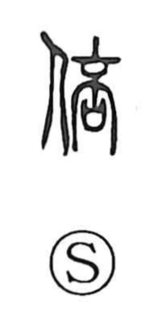

倍

Uncategorized
Kun: | On: bai
double ・ times (multiplier) ・ to increase ・ to multiply
Explanation
Shirakawa sees 倍 as a phono-semantic compound: the person element (亻) is paired with a phonetic that depicts a ripe pod or fruit on the verge of splitting open. That image of breaking and bursting suggests proliferation, so the character comes to mean increasing in number—hence “to double,” as in compounds like 倍加 and 数倍. From the same notion of things parting and going in separate directions, an early usage also expressed the idea of turning away or opposing.